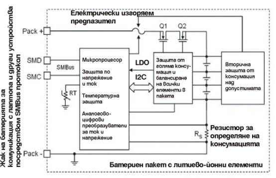
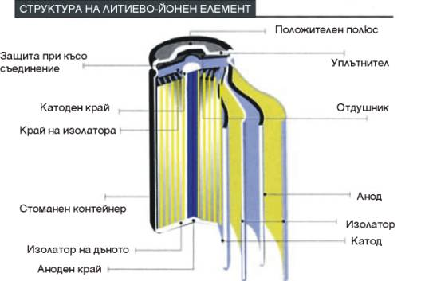

ИНФОРМАЦИЯ ЗА ЛИТИЕВО-ЙОННИ БАТЕРИИ
Мобилността е нещо без което не можем в нашето съвремие. Мобилни телефони, MP3 плейъри, Bluetooth устройства, лаптопи и много други джаджи са част от нас и дори не се замисляме какъв би бил животът без тях. Всяко едно от тези устройства се нуждае от батерия за да работи навън и да ни върши работата, за която е предназначено.
Фирма ТОРИН КОМПЮТЪРС натрупа многогодишен опит както в продажбата на нови батерии, така и в регенерацията на стари пакети. Поради начина на работа на батериите, регенерацията на стари батерии включва два основни процеса: подмяна на старите елементи с нови и препрограмиране на електрониката, за да може тя да “знае”, че елементите са подменени с напълно нови. Някои производители задават парола за препрограмиране на електрониката и без нея този процес не може да се извърши. Тогава ни се налага да интегрираме нова електроника за да може всичко да работи като напълно нова батерия. Батериите се свързват в пакет посредством машина за точково заваряване като се използва специална лента за заваряване, наречена HILUMIN, тъй като всякаква температурна интервенция (например използване на поялник) ще наруши химията на елемента и ще го повреди или ще му намали значително работоспособността.
Тъй като батериите, които съдържат литий могат да осигурят доста голям ток по време на работа, те се смятат за опасни при неправилна експлоатация и особено при закъсяване на елементите. Поради тази причина експлоатацията на тези елементи винаги е съпроводена от наличие на електронна платка, която да се грижи за правилното зареждане, разреждане и работа на елементите. Предлагаме на вашето внимание една блокова схема, която образно онагледява основните функции на пакета и електронната и платка:

В батерийните пакети са внедрени също така и температурни защити, защото при проблем с клетките на батериите вдигат температурата си много бързо. Така тази електронна платка се грижи за безопасната работа на мобилното ви устройство. Във всеки един момент тя “знае” колко е остатъчния капацитет на батерията и колко време би трябвало да работи устройството с този капацитет. С течението на времето остатъчния капацитет постепенно намалява, защото елементите губят част от своята мощ. При най-малък проблем свързан с някоя от клетките, електрониката “откъсва” батерията от устройството. В повечето случаи това става посредством електрически изгоряем предпазител, който задължително трябва да е част от електрониката.
След дългогодишно търсене фирма ТОРИН има удоволствието да предлага на пазара едни от най-качествените батерии и елементи на световния пазар, които Texas Instruments е сертифицирала за своите микропроцесори. Това ни дава свобода да поддържаме 1 година гаранция, която е по-голяма дори от батериите на новопродадените лаптопи. Много от нас не поглеждат гаранционните условия при покупката на нов лаптоп и когато имат проблем с батерията установяват, че тя е с ограничена гаранция, която понякога е от 3 до 6 месеца.
За повечето ни клиенти батерията се изчерпва с продуктовия и номер. Така те сравняват цените на различни доставчици и се учудват от разликата. Трябва да се знае, че цената на една батерия се определя от няколко нейни характеристики:
1. Качество на елементите, с които е произведена батерията – тъй като батериите за лаптопи съдържат по 6, 8 или дори понякога до 16 елемента, тогава цената на един елемент чувствително влияе върху цената на целия пакет.
2. Капацитет на батерията – колкото по-голям капацитет е батерията, толкова повече елементи има тя. Намаляване на капацитета на батерията е един от начините за поевтиняването и.
3. Напрежение на работа – основните напрежения, в които се произвеждат батериите за лаптопи са 10.8V (11.1V) и 14.4V (14.8V). Дънната платка на лаптопа може да работи и с двата вида захранващи напрежения от батерията. Ако една батерия се предлага и в двете напрежения и един и същ капацитет, тогава варианта 11.1V съдържа по-малко елементи и това я прави по-евтина.
4. Електронната платка също формира цената на батерията. По-нискоинтелигентните решения са по-евтини, отколкото използването на съвременни процесори, които са направени с една единствена цел – сигурна, безпроблемна и продължителна работа на вашата батерия.
Тук ви предлагаме и малко информация относно химията на елементите, които са най-популярни – литиево-йонните. Те са най-разпространените и най-използваните в последните години. Най-важните характеристики, които ги правят широко използвани са малкото им тегло и голямата им производителност, възможност до 500 цикъла заряд-разряд, 3 обръча на сигурност и са без "memory effect". Ето и структурна схема на един литиево-йонен елемент:

Важно е да се знае, че батериите имат живот, който по дефиниция е наистина около 500 цикъла на заряд и разряд, но това се постига само при определени условия на консумация и зареждане. Най-важното изискване за да се постигнат тези цикли е тока на консумация при работа на мобилните устройства, когато работят само на батерия. Той обикновено не трябва да надвишава 20-30% от капацитета на елементите, от които е произведена батерията. В действителност почти всички нови поколения лаптопи не могат да се справят с това изискване. Мощността, която те ни предлагат не може да се съвмести с ниската консумация. Производителите влагат огромни усилия и средства за да постигнат голяма мощ с ниска консумация, но все още не са успели напълно. Не на последно място стои и качеството на елементите, от които са формирани батерийните пакети. Всички тези детайли са причина батериите лесно да се износват и дефакто животът на батерията на един средностатистически лаптоп да е между 1 и 3 години.
Надяваме се да сме ви били полезни и да сме ви направили малко по-информирани относно батериите, които са неразделна част от нашите джобове или нашия багаж.
Ако е дошло времето за смяна на вашата батерия или за нейното регенериране тогава можете да посетите нашия специализиран сайт за тази цел www.SmartBattery.eu